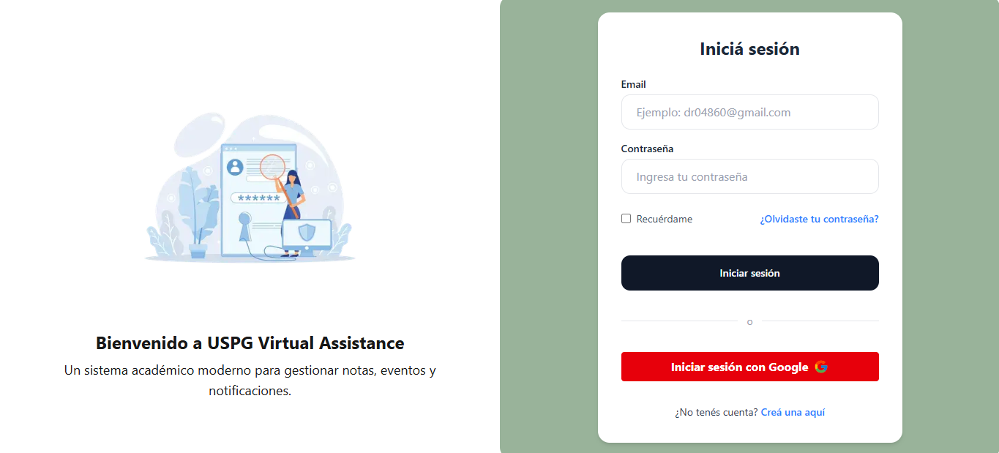
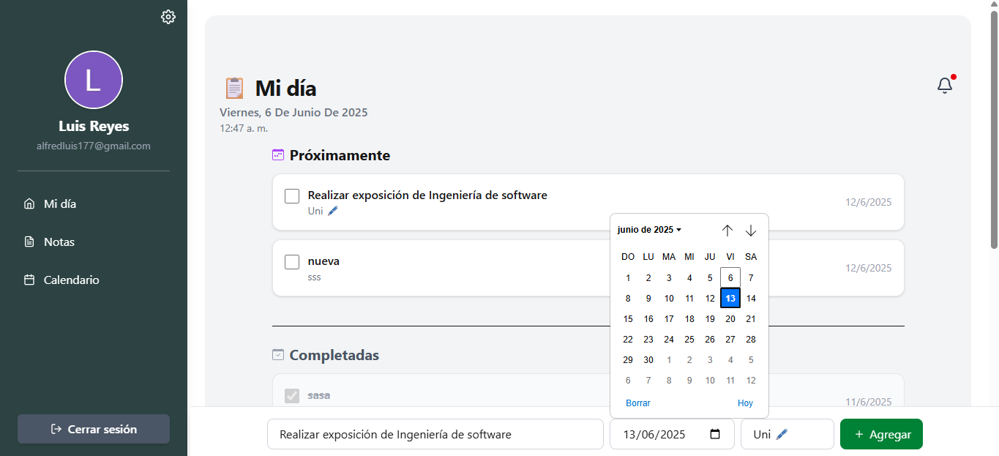
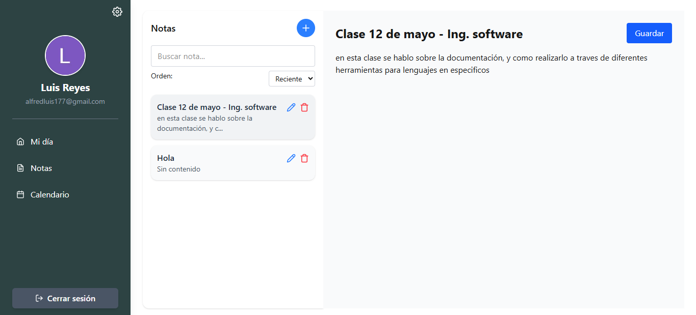
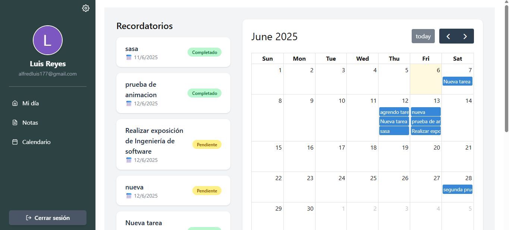
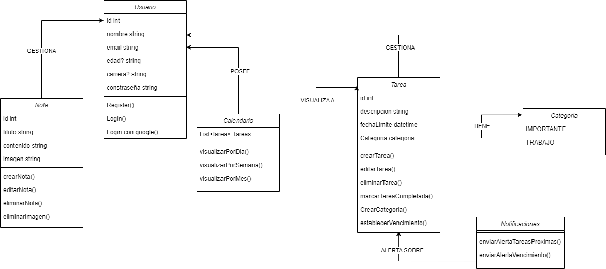
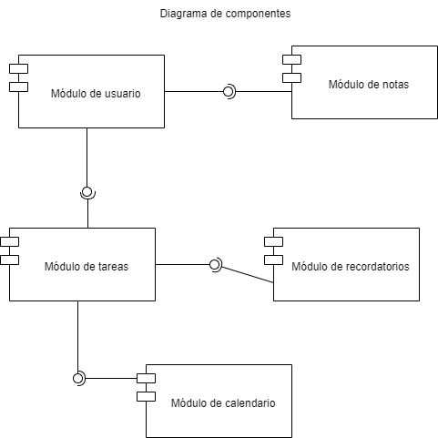
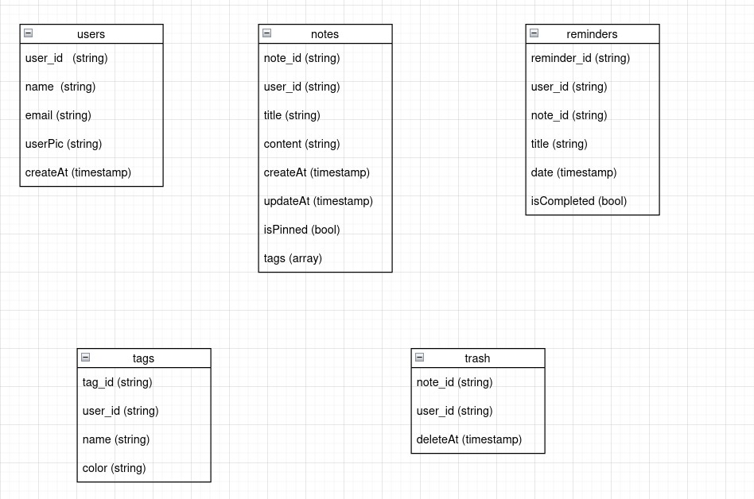
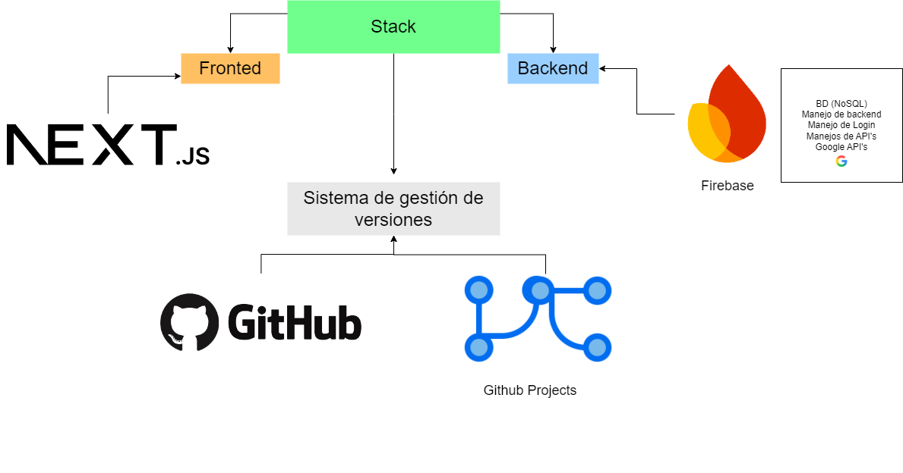

uspg_av - v0.1.0 USPG Assistant 🗒️ USPG Assistant es una aplicación web desarrollada con Next.js y TypeScript , estructurada bajo el enfoque de Arquitectura Limpia (Clean Architecture) .
🚀 Propósito Organizar tu día de forma sencilla y eficiente.
Gestionar notas y tareas .
Crear categorías personalizadas para las tareas.
Asignar fechas de vencimiento .
Visualizar tareas directamente en un calendario .
🛠️ Tecnologías utilizadas
Next.js – Framework para React con renderizado híbrido.TypeScript – Tipado estático para mayor robustez.Clean Architecture – Separación clara entre lógica de negocio, presentación e infraestructura.TypeDoc – Generación automática de documentación basada en los comentarios del código.
🔐 Autenticación
Inicio de sesión con cuenta de Google mediante OAuth.
Inicio de sesión manual mediante registro tradicional con email y contraseña.
 📋 Dashboard (To-Do List)
Visualización de una lista de tareas en un dashboard intuitivo.
Funcionalidades disponibles:
✅ Crear nuevas tareas.
❌ Eliminar tareas.
🕒 Establecer fechas de vencimiento.
✔️ Marcar tareas como completadas.
Bandeja de notificaciones que alerta:
Tareas próximas a vencer.
Tareas vencidas.

📝 Gestión de Notas
Sistema de notas personales a través de un panel lateral.
Puedes:
Crear nuevas notas.
Editarlas o eliminarlas fácilmente.
Buscar y ordenar notas por fecha.
Vista de edición clara y enfocada.

📅 Calendario Interactivo
Visualización de tareas programadas según su fecha de vencimiento .
Acceso rápido a:
Descripción de cada tarea.
Fecha de vencimiento.
Estado actual: pendiente o completada .

🖋️ Diagramas utilizados 📘 Diagrama de clases A continuación, se muestra el diagrama de clases que representa la estructura general de entidades y relaciones del sistema:

📘 Diagrama de componentes El diagrama de componentes representa la organización modular de la aplicación y cómo se comunican entre sí los distintos bloques funcionales.

📘 Diagrama de Entidad Relación El diagrama ER muestra las principales colecciones y documentos utilizados en la base de datos NoSQL de Firebase.
Aunque Firebase no maneja relaciones tradicionales como una base de datos relacional, este diagrama permite visualizar de forma clara:
Las colecciones principales del sistema (por ejemplo: users, reminders, notes, tags y trash).
La estructura básica de los documentos , incluyendo sus campos clave.

📘 Diagrama de arquitectura Este diagrama muestra la arquitectura tecnológica empleada en la aplicación USPG Assistant , basada en un stack moderno y herramientas de colaboración en equipo.
Frontend: Desarrollado con Next.js , encargado de la interfaz de usuario y la interacción con el usuario final.Backend: Gestionado a través de servicios ofrecidos por Firebase , incluyendo:
Base de datos NoSQL (Firestore)
Autenticación con Google
Manejo de APIs y lógica del backend
Stack general: Integra el frontend y el backend en una arquitectura moderna basada en la nube.Gestión de versiones: Control de código y planificación del proyecto mediante GitHub y GitHub Projects , lo cual permite mantener un flujo de desarrollo organizado y colaborativo.

{kind=link}
{kind=link}
{kind=link}
{kind=link}